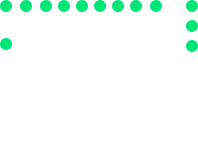

MOON INDUSTRIES.
ABOUT MOON INDUSTRIES
There is a moment in the life
of any aspiring astronomer that it is time to buy that first telescope.
It’s exciting to think about setting up your own viewing station whether
that is on the deck of your home or having a powerful but mobile telescope
set up to take to the remove countryside to really get a good shot at some breath taking star gazing.
The last thing we would want to do is to take away any of the “fun” of your hobby of astronomy because the joy of what we do as star gazers is a big part of the appeal. But unlike many other hobbies, ours is a passion of science, of learning and of discovery. And don’t kid yourself, even a hobbyist with a limited telescopic set up can see some amazing things in the stars. Now we use the term “telescope geeks” lovingly because any of us who are devote d to our love of astronomy eventually become telescope geeks. And these are the type of people who will know exactly how to evaluate your needs in terms of where you are right now and where you want to go as your hobby grows with you. So if you have not yet associated with a local astronomy club, now is the time to do it.
Start rubbing elbows with people who live and breathe telescopes. Their input is a hundred times more reliable than what a sales brochure or that salesman might have to say because the “telescope geeks” have been where you are, made the mistakes and are eager to help you avoid those same mistakes. Size Matters
In the world of telescopes, the sales people see, to try to baffle us with all the bells and whistles of their hottest selling model. One of the big check points that is often pushed is the amplification level of the telescope lens. While that is a factor that is worth noting, when it comes to a telescope lens, the old phrase “size matters” is a good guideline. Just remember that your telescope lens works best when it takes in the most light it can from the object you are viewing.
So the wider the diameter of the lens, the better a view you are going to get. So don’t fall for the amplification level only. Carefully evaluate the lens size so you have the right fit for what you want to do. It Has to Stand on Its Own Feet.
If you are going to set up a permanent telescope station, then you can bolt the u nit down so it is well supported. But many of us have to take our telescopes out into the country for optimum use. So the stand has to be strong and flexible so we can set up the telescope on uneven turf but still feel secure that this important and expensive piece of equipment is going to stand on its own without fear of it falling during our observation time.
We already mentioned strong and flexible as evaluation guides for the telescope stand but add in ease of use as well. You have to be able to set your telescope up and break it down quickly and easily when you are on a remote viewing. You may even find yourself setting up or taking down your telescope in the dark or by lantern or flashlight if you are taking advantage of the great star displays in the late night sky that make this hobby so exciting.
These are the basics of what to look for in your new telescope. Finally, make sure the telescope can be enhanced and expanded without having to throw the first unit away and buy something completely new. You want your telescope to grow as your knowledge and skills grow. If your first telescope meets all of these requirements, you are off on the right foot on a long and enjoyable career as an amateur astronomer.
The last thing we would want to do is to take away any of the “fun” of your hobby of astronomy because the joy of what we do as star gazers is a big part of the appeal. But unlike many other hobbies, ours is a passion of science, of learning and of discovery. And don’t kid yourself, even a hobbyist with a limited telescopic set up can see some amazing things in the stars. Now we use the term “telescope geeks” lovingly because any of us who are devote d to our love of astronomy eventually become telescope geeks. And these are the type of people who will know exactly how to evaluate your needs in terms of where you are right now and where you want to go as your hobby grows with you. So if you have not yet associated with a local astronomy club, now is the time to do it.
Start rubbing elbows with people who live and breathe telescopes. Their input is a hundred times more reliable than what a sales brochure or that salesman might have to say because the “telescope geeks” have been where you are, made the mistakes and are eager to help you avoid those same mistakes. Size Matters
In the world of telescopes, the sales people see, to try to baffle us with all the bells and whistles of their hottest selling model. One of the big check points that is often pushed is the amplification level of the telescope lens. While that is a factor that is worth noting, when it comes to a telescope lens, the old phrase “size matters” is a good guideline. Just remember that your telescope lens works best when it takes in the most light it can from the object you are viewing.
So the wider the diameter of the lens, the better a view you are going to get. So don’t fall for the amplification level only. Carefully evaluate the lens size so you have the right fit for what you want to do. It Has to Stand on Its Own Feet.
If you are going to set up a permanent telescope station, then you can bolt the u nit down so it is well supported. But many of us have to take our telescopes out into the country for optimum use. So the stand has to be strong and flexible so we can set up the telescope on uneven turf but still feel secure that this important and expensive piece of equipment is going to stand on its own without fear of it falling during our observation time.
We already mentioned strong and flexible as evaluation guides for the telescope stand but add in ease of use as well. You have to be able to set your telescope up and break it down quickly and easily when you are on a remote viewing. You may even find yourself setting up or taking down your telescope in the dark or by lantern or flashlight if you are taking advantage of the great star displays in the late night sky that make this hobby so exciting.
These are the basics of what to look for in your new telescope. Finally, make sure the telescope can be enhanced and expanded without having to throw the first unit away and buy something completely new. You want your telescope to grow as your knowledge and skills grow. If your first telescope meets all of these requirements, you are off on the right foot on a long and enjoyable career as an amateur astronomer.